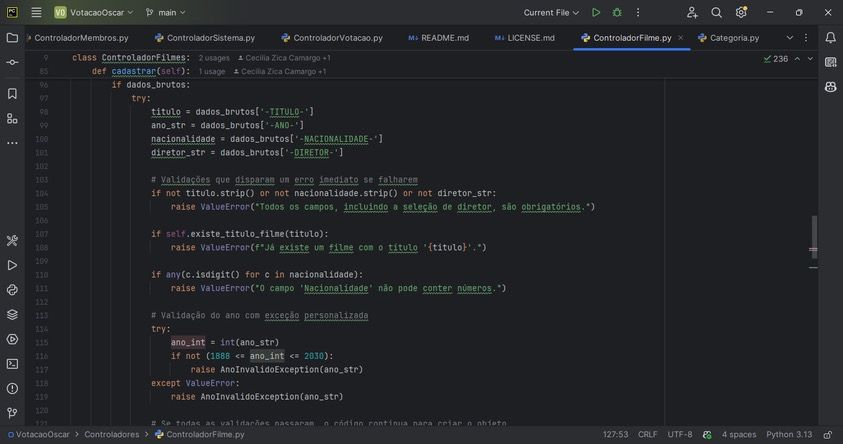
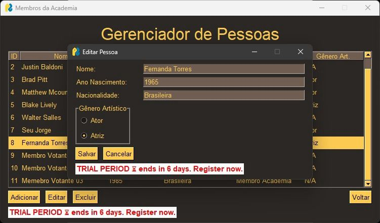
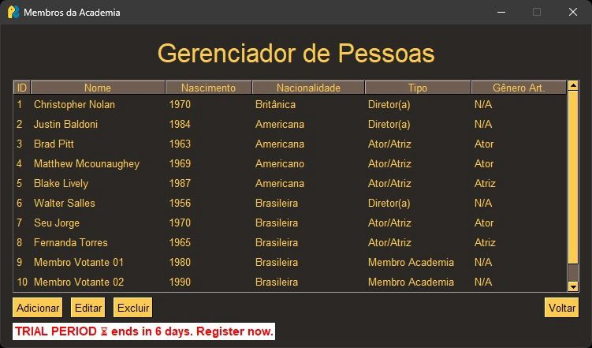
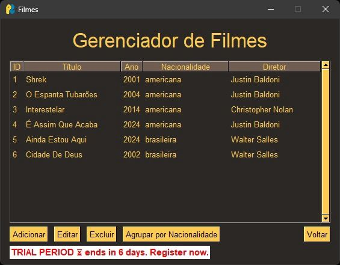
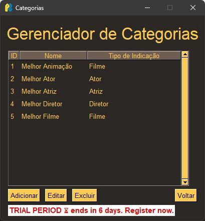

Object-oriented design
Oscar voting system (OOP final project)
A console app evolved into an interactive desktop application with MVC, persistence and exception handling.
The problem
Registration, nomination and voting rules multiply fast, and a console script stops being maintainable.
What I built
With a teammate I built the full system: registration of movies, actors, actresses and directors, category nominations, voting flows, winner generation and a usable interface — applying MVC in depth, with persistence and exception handling.
Team: João Paulo Decker Oleinik
Result
A maintainable architecture, and the lesson that process quality counts as much as the result.
Screens






Stack
- Python
- MVC
- OOP
- Persistence